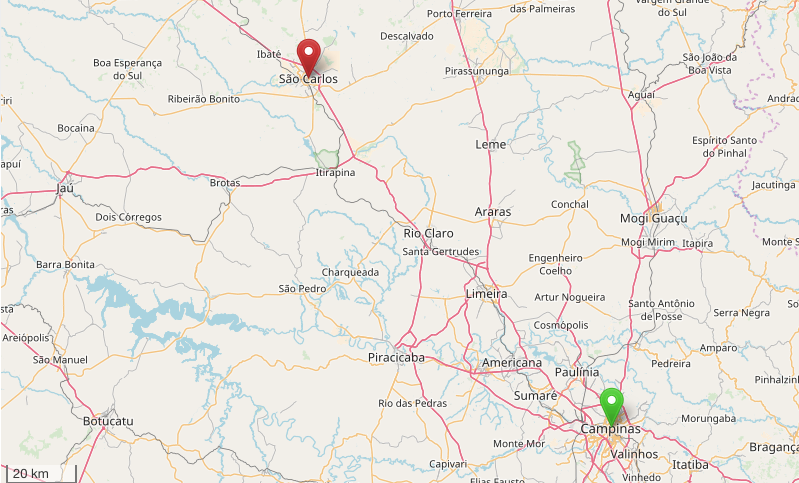

Inscrições:São CarloseCampinas
O que é?
O FoG e o Gamux, em parceria com a LivreCamp e o sancaLUG, traz para o interior de São Paulo a primeira edição da Livre Jam! Reúna sua equipe, junte uma tonelada de snacks, encha suas garrafas de café e venha encarar umamaratona de 48h desenvolvendo um game e trocando experiênciascom outros desenvolvedores; tudo, claro, utilizando o máximo possível de softwares e tecnologias livres :)
E para introduzí-los a algumas das ferramentas que recomendamos,ministraremos diversos workshopsem Campinas e São Carlos. Para mais informações como datas e locais, fique ligado neste site e em nossa página do Facebook!
Cronograma:São CarloseCampinas
Workshops
Regras e Informações
Os grupos terão48hpara desenvolver, submeter e apresentar um game que aborde um tema que será divulgado apenas no começo da Jam. Para isso deverão usartecnologias livres para a produção do jogo.
Você pode produzir um jogo eletrônico ou analógico, dequalquer gêneropara uma quantidade indefinida de jogadores: a criatividade é o limite! Todas as ideias serão aceitas desde que abordem o tema, tenham sido desenvolvidos dentro do evento e possuamlicença livre
Vale lembrar que a Livre Jamnão é uma competiçãomas uma maratona de criatividade! O objetivo do evento é proporcionar um ambiente onde entusiastas — programadores, artistas, músicos, sonoplastas, escritores e outras mentes criativas — possamdesenvolver novas habilidades, prototipar novas ideiasou até mesmo terem umprimeiro contato com a criação de um jogo, além de terem o jogo divulgado na nossa página numa mega-coleção dejogos livres!
Portanto, a sua maior vitória é chegar ao final do evento com algo jogável e, mesmo que feinho,faça você se orgulhar! ❤
Locais Participantes
Campinas
Instituto de Computação, IC-3.5, UnicampAvenida Albert Einstein, 1251
Cidade Universitária, Campinas, SP[ Mapa ]
São Carlos
Instituto de Ciências Matemáticas e de Computação, USPAvenida Trabalhador Sancarlense, 400
Centro, São Carlos, SP[ Mapa ]